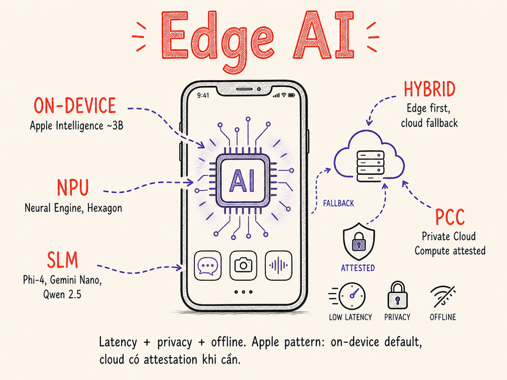

Edge & On-device Agents
Khi intelligence chạy ngay trên thiết bị — không cần mạng, không rời dữ liệu, không tốn inference bill. Từ Apple Neural Engine đến llama.cpp, từ Phi-4 đến Gemini Nano: kiến trúc hybrid edge-cloud là tương lai của agentic AI.

42.1 Tại sao Edge / On-device?
Từ năm 2020 đến 2023, mặc định của mọi AI application là "gọi cloud API". Mô hình nằm trên server của provider, request đi qua internet, response trả về. Đơn giản, mạnh, nhưng đi kèm 5 nhược điểm căn bản:
| Vấn đề | Mô tả | Tác động thực tế |
|---|---|---|
| Latency | Mỗi request cần round-trip qua internet: 100–500 ms chỉ cho network | Không dùng được trong real-time (gaming, robotics, live speech) |
| Privacy | Dữ liệu nhạy cảm (y tế, pháp lý, cá nhân) rời thiết bị | GDPR, HIPAA, enterprise data governance bị vi phạm |
| Offline | Không có mạng = không có AI | App lỗi trong tàu điện ngầm, vùng sâu, máy bay |
| Cost | Mỗi request tốn tiền — tích lũy khủng khiếp ở scale | 1M user × 50 requests/ngày × $0.002 = $100k/ngày |
| Control | Phụ thuộc provider: rate limit, outage, deprecation, price change | Sản phẩm bị tê liệt khi provider có vấn đề |
Edge AI — chạy model ngay trên thiết bị (điện thoại, laptop, IoT board, xe hơi) — giải quyết toàn bộ 5 điểm trên. Đổi lại: model nhỏ hơn, capability giảm. Câu hỏi của 2026 không còn là "có nên dùng on-device không?" mà là "task nào nên chạy ở đâu?"
Nghĩ về edge model như fast lane: xử lý 80% requests ngay tức thì, cục bộ, miễn phí. Cloud là escalation path: chỉ khi request quá khó. Giống như một văn phòng có receptionist xử lý hầu hết việc, escalate lên senior khi cần.
42.2 Apple Intelligence — Blueprint cho Edge-Cloud Hybrid
Apple Intelligence (ra mắt iOS 18 / macOS Sequoia, mở rộng mạnh 2025–2026) là ví dụ production đầy đủ nhất về on-device AI ở quy mô consumer. Với iOS 26 / macOS Tahoe 26, Apple mở thêm Foundation Models framework — cho phép third-party developers dùng trực tiếp ~3B on-device model (guided generation, streaming, tool calling) qua Swift API, không cần kết nối mạng, không tốn inference fee. Kiến trúc gồm 3 lớp:
- On-device foundation model (~3B parameters): Chạy hoàn toàn trên Apple Neural Engine trong chip A17 Pro / M-series và mới hơn. Xử lý summarization, Writing Tools, Smart Reply, Semantic Search, cùng tool calling qua Foundation Models framework (iOS 26+). Không có gì rời khỏi thiết bị.
- Private Cloud Compute (PCC): Khi request quá phức tạp cho on-device, iOS gửi lên Apple Silicon servers trên cloud — nhưng với cryptographic attestation: Apple cam kết không log, không retain, không có khả năng inspect data của user. Được audit bởi independent researchers. Đầu 2026, PCC được nâng cấp lên chip M5, mang lại hiệu năng cao hơn cho các agent-style workloads phức tạp.
- ChatGPT integration (opt-in): Chỉ khi user chủ động allow, mới gửi lên OpenAI cho các queries cần GPT-4-class reasoning. Người dùng thấy rõ khi nào điều này xảy ra.
Semantic Index — bộ nhớ cá nhân không rời thiết bị
Apple Intelligence xây dựng một semantic index của toàn bộ dữ liệu cá nhân: email, tin nhắn, ảnh, tài liệu, lịch. Index này (embedding vectors) chỉ tồn tại on-device. Khi Siri cần tìm "bức ảnh chụp với mẹ ở Hội An năm ngoái", nó query semantic index cục bộ — không upload ảnh, không gửi query ra ngoài.
42.3 Small Language Models đáng biết năm 2026
"Small" ở đây nghĩa là đủ để chạy được on consumer hardware (laptop, điện thoại cao cấp). Ranh giới thực tế: <8B parameters cho mobile, <14B cho laptop/PC với NPU.
| Model | Tổ chức | Params | Context | HW target | Điểm mạnh | License |
|---|---|---|---|---|---|---|
| Phi-4 | Microsoft | 14B | 16k | Laptop (16GB RAM) | Reasoning & math vượt trội so với kích thước; STEM tasks | MIT |
| Phi-4-mini | Microsoft | 3.8B | 128k | Mobile / edge NPU | Long context nhỏ gọn; tool calling; function use | MIT |
| Gemini Nano 2 | ~3B | 32k | Android (Pixel 9+, Galaxy S25) | Tích hợp sâu vào Android AI Core; multimodal lite | Proprietary | |
| Llama 3.2 1B | Meta | 1B | 128k | Mobile / IoT | Cực nhỏ; ExecuTorch ready; vision variant | Llama 3.2 |
| Llama 3.2 3B | Meta | 3B | 128k | Mobile cao cấp / laptop | Cân bằng size-quality tốt; fine-tune tốt | Llama 3.2 |
| Qwen 3.5 0.8B | Alibaba | 0.8B | 262k | Mobile thấp cấp / IoT | ~500MB; multimodal native; linear attention → constant memory; 4GB RAM phone | Apache 2.0 |
| Qwen 3.5 2B | Alibaba | 2B | 262k | Mobile / edge | ~1.2GB; multimodal; hybrid linear/softmax attention; điểm ngọt cho 6–8GB RAM phone | Apache 2.0 |
| Gemma 4 E2B | 2B eff. | 32k | Pixel / Android / Chrome | Vision + audio + text + function calling on-device; Apache 2.0 từ tháng 4/2026 | Apache 2.0 | |
| Gemma 4 E4B | 4B eff. | 32k | Pixel 9+ / mid-range laptop | Multimodal edge; tốt hơn Gemma 3 4B đáng kể; cần 8GB RAM | Apache 2.0 | |
| Llama 4 Scout | Meta | ~3B active (MoE) | 10M | Mobile cao cấp / laptop | MoE: chỉ activate ~3B params khi inference; ~15–22 tok/s trên Snapdragon 8 Gen; multimodal | Llama 4 |
| SmolLM2 1.7B | HuggingFace | 1.7B | 8k | Edge / browser (WebGPU) | Thiết kế cho efficiency; tốt cho agentic tasks đơn giản; runs in browser | Apache 2.0 |
Đừng chọn theo params — chọn theo task cụ thể. Phi-4 cho math/code trên Windows Copilot+ (hoặc Phi-Silica nếu dùng Windows App SDK), Gemini Nano / Gemma 4 E2B/E4B cho Android ecosystem, Qwen 3.5 cho đa ngôn ngữ Châu Á và context dài (262k native), Llama 4 Scout nếu cần multimodal với context cực dài, SmolLM cho browser / resource-constrained. Luôn benchmark trên task của bạn, không dựa vào leaderboard tổng quát.
42.4 Hardware: NPU & SoC hiện đại
Điều làm on-device AI thực tế không phải chỉ model nhỏ hơn — mà là phần cứng chuyên dụng. Mọi SoC hiện đại 2024–2026 đều tích hợp Neural Processing Unit (NPU) cùng CPU và GPU.
Vì sao NPU quan trọng?
LLM inference là một chuỗi các matrix multiplications khổng lồ. CPU giỏi sequential logic, GPU giỏi parallel float ops nhưng tốn điện, NPU được thiết kế riêng cho low-precision matrix ops với energy efficiency cao gấp 5–15 lần GPU cho cùng throughput. Trên Apple M4: ANE xử lý inference tiết kiệm ~8x điện so với GPU.
42.5 Frameworks cho On-device AI
| Framework | Platform | Hỗ trợ NPU | Dùng khi nào |
|---|---|---|---|
| Core ML | iOS / macOS | Apple ANE (native) | Deploy .mlpackage trong iOS/macOS app; tự động sử dụng ANE |
| MLX | macOS / Apple Silicon | Apple GPU + ANE | Chạy Llama, Mistral, Phi trực tiếp trên Mac; Python / Swift API |
| ONNX Runtime | Windows / Android / Linux / iOS | DirectML, QNN (Qualcomm), CoreML EP | Cross-platform deployment; convert model sang .onnx |
| llama.cpp | Mọi platform | CPU SIMD, Metal (Apple), CUDA, Vulkan | Chạy GGUF-quantized models; lightweight; dễ embed |
| MediaPipe LLM Inference | Android / iOS / Web | GPU delegate, NNAPI (Android) | Gemini Nano và tương thích models trên mobile |
| ExecuTorch | iOS / Android / Embedded | XNNPACK, CoreML, Qualcomm QNN | Meta's runtime cho Llama trên mobile; production-grade |
| MLC LLM | iOS / Android / Web / macOS / Windows | Metal, CUDA, Vulkan, WebGPU, OpenCL | ML Compilation — tối ưu cả model lẫn runtime cho từng device; OpenAI-compatible API |
| Phi-Silica (Windows App SDK) | Windows Copilot+ PC | Qualcomm Hexagon NPU (native) | Microsoft's inbox SLM cho Copilot+ PCs; zero config, accessible qua WinRT API từ Jan 2025 |
| Foundation Models (iOS/macOS) | iOS 26+ / macOS 26+ | Apple Neural Engine (native) | Apple's public API cho on-device ~3B model; Guided Generation + Tool Calling + Streaming |
Ví dụ: chạy Llama 3.2 3B bằng MLX (Python)
# Cài đặt: pip install mlx-lm
from mlx_lm import load, generate
# Load model + tokenizer — tự động dùng Apple Silicon GPU/ANE
model, tokenizer = load("mlx-community/Llama-3.2-3B-Instruct-4bit")
messages = [
{"role": "system", "content": "Bạn là trợ lý hữu ích."},
{"role": "user", "content": "Tóm tắt email này bằng 1 câu: ..."},
]
prompt = tokenizer.apply_chat_template(
messages, add_generation_prompt=True, tokenize=False
)
response = generate(model, tokenizer, prompt=prompt, max_tokens=200)
print(response)
# Chạy hoàn toàn on-device, ~40 tokens/s trên M3 ProVí dụ: deploy Core ML model trong iOS (Swift)
import CoreML
import Foundation
// Load compiled .mlpackage — tự động route sang ANE khi có thể
let config = MLModelConfiguration()
config.computeUnits = .all // CPU + GPU + ANE
let model = try MyTextClassifier(configuration: config)
// Inference — synchronous, no network, <5ms
let input = MyTextClassifierInput(text: userMessage)
let output = try model.prediction(from: input)
handleResult(output.label, confidence: output.labelProbability[output.label] ?? 0)42.6 Quantization cho Edge — Kỹ thuật nén model
Model 3B tham số với FP32 weights = ~12 GB — không fit vào RAM điện thoại. Quantization giảm bits-per-weight, đổi lấy model nhỏ hơn và nhanh hơn, với mất mát accuracy thường chấp nhận được.
4-bit quantization với K-quant grouping — chuẩn mực cho mobile 2026. Model 3B: ~1.8 GB, đủ chạy trên iPhone với 6GB RAM. Accuracy giảm <3% so với FP16 cho hầu hết tasks. Sử dụng: GGUF format với llama.cpp, hoặc AWQ/GPTQ cho ExecuTorch.
→ Default lựa chọn cho mọi mobile deployment
5-bit với K-quant — trade-off ngọt ngào giữa size và quality. Model 3B: ~2.2 GB. Accuracy giảm <1.5%. Tốt cho laptop/PC edge có 8+ GB RAM nhưng muốn tiết kiệm bộ nhớ.
→ Tốt cho laptop edge, không phải mobile
6-bit với K-quant — gần như không thể phân biệt với FP16 trên hầu hết tasks. Model 3B: ~2.7 GB. Accuracy giảm <0.5%. Cho cases cần precision cao (medical, legal) nhưng vẫn muốn on-device.
→ Khi accuracy là ưu tiên tuyệt đối
8-bit weights + 8-bit activations hoặc FP8 — thường dùng cho "edge server" (NVIDIA Jetson, Qualcomm AI Box) hơn là mobile. Giữ accuracy cao nhưng vẫn giảm ~50% memory so với FP16. Mixed precision: FP8 cho attention, INT8 cho FFN layers.
→ Edge server / Jetson / on-prem inference
Không phải mọi task đều chịu quantization như nhau. Math reasoning và code generation thường bị ảnh hưởng nhiều nhất bởi low-bit quantization. Summarization và classification thường chịu tốt hơn. Luôn benchmark task cụ thể trước khi chọn quant level.
42.7 Small nhưng chuyên biệt — SLM Strategy
Một trong những insight quan trọng nhất của 2025–2026: một SLM 3B fine-tuned cho một task cụ thể thường đánh bại GPT-4-class model trên task đó. Lý do:
- Overfit theo nghĩa tốt: Model học "shape" của task — format output, domain vocabulary, reasoning pattern đặc thù. General model phải inference từ prompt; fine-tuned model đã internalize.
- Không phải reasoning mà là pattern matching: 70–80% tasks trong production không cần reasoning thực sự — chỉ cần nhận dạng pattern và transform. SLM làm điều này tốt.
- Latency & cost cliff: GPT-4 3–5 giây và $0.01/request. SLM on-device: 0.3 giây và $0. Đây là sự khác biệt có thể quyết định UX.
Khi nào nên fine-tune SLM thay vì dùng general LLM?
| Signal | → Dùng general LLM | → Fine-tune SLM |
|---|---|---|
| Volume requests | <10k/ngày | >100k/ngày |
| Task diversity | Nhiều loại task khác nhau | Một task lặp đi lặp lại |
| Training data | Ít hoặc không có labeled data | Có 1000+ examples chất lượng cao |
| Latency requirement | >1 giây OK | <500ms cần thiết |
| Privacy | Data có thể rời thiết bị | Data tuyệt đối không được gửi ra ngoài |
| Cost budget | Cloud cost chấp nhận được | Zero marginal cost cần thiết |
42.8 Hybrid Edge-Cloud Routing
Không phải all-or-nothing. Pattern mạnh nhất 2026 là hybrid routing: phân loại request theo độ phức tạp, route on-device khi có thể, escalate lên cloud khi cần.
Xây dựng complexity classifier
Classifier không cần phức tạp — thường một trong các approaches sau là đủ:
- Heuristic rules: Input length, số lượng entities, has code?, has math? → rule-based score nhanh
- Tiny classification model: DistilBERT hoặc tương đương fine-tuned trên labeled easy/hard examples. <30MB, <5ms inference
- SLM self-assessment: Yêu cầu SLM tự đánh giá confidence trên output — nếu thấp, escalate
- A/B fallback: Thử on-device, nếu output quality score dưới threshold, retry với cloud
42.9 Tool Use On-Device
Agents on-device không chỉ generate text — họ cần gọi tools: đọc calendar, tra contacts, tạo reminder, query local database. iOS và Android đã có framework riêng cho điều này.
Apple App Intents + SiriKit
import AppIntents
// Define một tool mà on-device agent có thể gọi
struct CreateReminderIntent: AppIntent {
static var title: LocalizedStringResource = "Tạo nhắc nhở"
static var description = IntentDescription("Tạo nhắc nhở mới trong Reminders")
@Parameter(title: "Nội dung") var content: String
@Parameter(title: "Thời gian") var dueDate: Date?
func perform() async throws -> some IntentResult {
let store = EKEventStore()
let reminder = EKReminder(eventStore: store)
reminder.title = content
// ... save to EventKit
return .result(value: "Đã tạo nhắc nhở: \(content)")
}
}
// On-device agent (Apple Intelligence) có thể discover và call intent này
// mà không cần user describe cách hoạt động — chỉ cần metadata trênLocal tool registry pattern
Đối với custom on-device agents (dùng MLX / llama.cpp), cần build local tool registry:
# Python / pseudo-code cho local agent tool loop
LOCAL_TOOLS = {
"get_calendar_events": lambda date: local_calendar_api.get(date),
"search_contacts": lambda query: local_contacts_db.search(query),
"create_note": lambda text: local_notes.create(text),
"query_local_db": lambda sql: sqlite3.execute(sql),
}
def agent_loop(user_input: str):
messages = [system_prompt, {"role": "user", "content": user_input}]
while True:
# Inference on-device — zero network
response = on_device_model.generate(messages, tools=LOCAL_TOOLS)
if response.tool_calls:
for call in response.tool_calls:
result = LOCAL_TOOLS[call.name](**call.arguments)
messages.append({"role": "tool", "content": result})
else:
return response.content # final answer42.10 Privacy & Private Cloud Compute (PCC)
PCC là pattern đáng để mọi AI Engineer học — không phải chỉ vì Apple dùng nó, mà vì nó giải quyết câu hỏi căn bản: "Làm sao dùng cloud AI nhưng vẫn bảo đảm privacy?"
Đầu 2026, Apple nâng cấp PCC infrastructure lên chip M5 (bỏ qua M3 Ultra và M4), cải thiện đáng kể throughput cho các workload phức tạp. Đồng thời, Apple giới thiệu Private Cloud Compute Agent Worker — một phiên bản iOS chuyên biệt theo kiến trúc agent, cho phép PCC thực hiện multi-step agentic tasks (ví dụ Shortcuts dùng Apple Intelligence) trong khi vẫn giữ đảm bảo privacy tương đương.
Nguyên tắc PCC áp dụng được cho hệ thống của bạn
- Attestation: Server chứng minh cryptographically rằng nó chạy đúng software version — client verify trước khi gửi data
- Ephemeral processing: Data chỉ tồn tại trong RAM trong lúc xử lý, không persist
- Minimal footprint: Chỉ data tối thiểu cần thiết được gửi đi, không gửi thêm
- Public verifiability: Software hash public — ai cũng có thể verify là đúng cái đang chạy
42.11 Cost & Năng lượng — Giới hạn vật lý của Edge AI
On-device không có nghĩa là miễn phí — có cost về energy, nhiệt, và battery. Đặc biệt quan trọng trên mobile.
| Thiết bị | Model (Q4) | Tokens/s | Power draw | Battery ảnh hưởng |
|---|---|---|---|---|
| iPhone 16 Pro (A18 Pro) | Llama 3.2 3B | ~25–35 tok/s | ~3–4W | ~8–10% per phút inference liên tục |
| MacBook M4 Pro | Phi-4 14B | ~40–60 tok/s | ~15–25W | ~5–7% per 5 phút; thermal throttle 10–15 phút |
| Pixel 9 Pro (Tensor G4) | Gemini Nano 2 | ~20–30 tok/s | ~2–3W | ~6% per phút inference liên tục |
| NVIDIA Jetson Orin NX | Llama 3.2 8B | ~60–80 tok/s | ~10–15W | N/A (plugged); thermal management cần thiết |
Best practices cho mobile energy
- Batch requests: Gộp nhiều small requests thành một inference pass thay vì nhiều lần
- Response caching: Cache kết quả cho identical hoặc similar queries — đặc biệt hiệu quả cho phân loại và embedding
- Background processing: Chạy inference khi đang sạc, không phải khi dùng thường xuyên
- Thermal monitoring: API nhiệt độ để throttle inference trước khi hệ điều hành force-throttle (gây jank)
- Chọn model size đúng: Đừng dùng 7B nếu 1.5B đủ cho task
42.12 Cloud vs Edge — Framework Quyết Định
Đây là câu hỏi bạn sẽ phải trả lời cho mỗi feature trong product. Không có đáp án universal — phụ thuộc context. Framework dưới đây giúp structured thinking:
42.13 Shipping Model trong App — Thực tế sản xuất
Build on-device AI ≠ chỉ viết code gọi model. Shipping model vào production app có những thách thức riêng không giống cloud AI.
Model size và app bundle
- App Store / Play Store limits: iOS initial download <4GB, Android OBB bundle <2GB. Model 3B Q4 = ~1.8GB — fit nhưng sát giới hạn. Cân nhắc model 1–1.5B nếu app có nhiều assets khác.
- On-demand download: Dùng Background Assets (iOS) hoặc Play Asset Delivery (Android) để download model sau install — user không phải đợi download model khi install app.
- Shared model pool: Trên iOS, nhiều apps có thể share cùng một Core ML model đã được system cache — Apple Intelligence infrastructure làm điều này cho system models.
OTA model updates — cập nhật model không cần app update
// iOS: Check for model update trên app launch
func checkModelUpdate() async {
let currentVersion = UserDefaults.standard.string(forKey: "modelVersion") ?? "0"
let latestVersion = await ModelUpdateService.fetchLatestVersion()
guard latestVersion > currentVersion else { return }
// Download trong background khi trên WiFi + sạc
let task = URLSession.background.downloadTask(with: modelURL)
task.resume()
// Swap model sau khi download xong — zero downtime
}A/B testing theo model version
Không khác gì A/B test feature thông thường, nhưng model là biến:
- Assign users vào cohort (model_v1 vs model_v2) bằng user ID hash
- Track quality metrics theo cohort: task completion rate, user corrections, session length
- Rollout dần: 5% → 20% → 100% khi confident model mới tốt hơn
- Rollback nếu quality metric tụt — swap về model_v1 qua remote config, không cần app update
42.14 Giới hạn Hiện tại của On-device AI
Không phải mọi thứ đều ổn trên edge. Năm 2026, vẫn còn các hard limits:
| Giới hạn | Trạng thái 2026 | Horizon giải quyết |
|---|---|---|
| Long context | SLMs hỗ trợ 128k token nhưng đủ RAM để xử lý là khác — thực tế 16–32k trên mobile | Hardware RAM tăng, quantization tốt hơn; 2027–2028 |
| Multimodal chất lượng cao | Vision + text lite tốt (Llama 3.2 Vision), nhưng video, audio chất lượng cao vẫn cần cloud | Dedicated multimodal NPUs; 2027 |
| Agent depth | Multi-step agents với 20+ tool calls không ổn định trên SLMs — error accumulation | Better training data cho agentic SLMs; fine-tuning cho reliability |
| Knowledge freshness | On-device model có knowledge cutoff — không có real-time info | RAG local (user's own data) + hybrid query cho public info |
| Reasoning deep | SLMs kém hơn đáng kể so với GPT-4/Claude cho multi-hop reasoning phức tạp | Inference-time scaling techniques cho SLMs đang được research |
| Model updates | 1.8GB OTA update tốn data/pin user; khó update thường xuyên | Delta updates (chỉ download phần thay đổi); adapter-based updates |
42.15 Cách cũ vs Cách hiện tại
All inference in cloud — pattern mặc định
- Mọi AI request → API call → cloud → response. Không có ngoại lệ.
- "On-device AI" = chỉ cho toy demos, không cho production.
- Privacy concern → "just anonymize data trước khi gửi" (không đủ).
- Offline mode → không có AI features khi offline.
- Cost optimization → chỉ giảm số requests, không thay đổi kiến trúc.
- Tất cả user data đi qua servers của provider — acceptable tradeoff theo tiêu chuẩn thời đó.
→ Simple kiến trúc nhưng costly, privacy-risky, và latency-bound
Smart hybrid: Edge first, cloud fallback
- Default on-device: Mọi task được thử on-device trước. Cloud là exception, không phải default.
- Complexity classifier quyết định route — người dùng không biết (và không cần biết).
- Privacy by architecture: sensitive data không bao giờ rời thiết bị — không phải by policy.
- Offline mode có AI features đầy đủ cho common tasks.
- Cost drastically thấp hơn: ~65–80% requests free (on-device), chỉ 15–20% tốn tiền cloud.
- Fine-tuned SLM cho task cụ thể — không phải general model xử lý mọi thứ.
- PCC hoặc equivalent cho cloud escalation — cryptographic guarantee, không phải policy promise.
→ Phức tạp hơn để build, nhưng tốt hơn về privacy, cost, latency, và user experience
Từ "cloud is default, on-device is special case" sang "on-device is default, cloud is escalation". Câu hỏi không còn là "tại sao dùng on-device?" mà là "tại sao cần cloud cho request này?".
Tóm tắt & Lời kết series
- 5 lý do Edge AI: latency (zero network), privacy (data stays), offline, cost (zero inference $), control (no vendor dependency). Giải quyết bằng on-device model.
- Apple Intelligence + Foundation Models là blueprint production hoàn chỉnh nhất: on-device ~3B với Foundation Models framework (iOS 26) mở cho third-party developers, PCC (nâng cấp M5 + Agent Worker 2026) cho medium complexity, opt-in cloud cho hard queries. Semantic index local.
- SLMs 2026 đáng biết: Phi-4 / Phi-Silica (reasoning, Windows Copilot+), Gemini Nano / Gemma 4 E2B/E4B (Android, multimodal edge), Llama 3.2 1B/3B + Llama 4 Scout (MoE, context dài), Qwen 3.5 0.8B–2B (đa ngôn ngữ, 262k context), SmolLM (browser/edge). Chọn theo task, không theo hype.
- Hardware: NPU (Apple ANE, Qualcomm Hexagon, Intel NPU, AMD XDNA) là game-changer — 30–300 TOPS chuyên dụng cho AI inference, 5–15x hiệu quả hơn GPU về energy per TOPS.
- Frameworks: Foundation Models (iOS 26 native API), Core ML / MLX (Apple Silicon), ONNX Runtime (cross-platform), llama.cpp (universal GGUF), ExecuTorch (Meta mobile production), MLC LLM (ML-compiled, iOS/Android/Web), Phi-Silica (Windows Copilot+ NPU, WinRT API).
- Quantization: Q4_K_M là default mobile (model 3B ≈ 1.8GB, accuracy loss <3%). Q6_K cho precision-critical. W8A8/FP8 cho edge servers. Luôn benchmark task cụ thể.
- Fine-tuned 3B beats generic 70B trên task cụ thể — SLM strategy là legitimate production approach, không chỉ cho cost saving mà còn quality.
- Hybrid routing: Complexity classifier → 65% on-device / 20% edge+cache / 15% cloud. Build classifier đơn giản (heuristic hoặc tiny model), không over-engineer.
- Tool use on-device: App Intents (iOS), local tool registry pattern. Agent có thể gọi calendar, contacts, local DB mà không cần network.
- PCC pattern: Attestation + ephemeral processing + public verifiability. Privacy không chỉ là policy — phải là kiến trúc và cryptographic guarantee.
- Giới hạn thực tế: Long context, deep multimodal, complex reasoning vẫn cần cloud. Design hybrid từ đầu để escalate seamlessly khi cần.
- Mindset shift: On-device là default; cloud là exception. Ship → measure → iterate.
Bạn vừa đi qua hành trình từ AI Engineering là gì đến Edge & On-device Agents — một snapshot của field vào năm 2026. Đây không phải tài liệu bất biến: tuần tới sẽ có model mới, framework mới, pattern mới. Nhưng những nguyên tắc cốt lõi sẽ còn đó: eval rigorously, ship incrementally, observe carefully, và luôn đặt câu hỏi "điều này có thực sự giúp được người dùng không?"
AI Engineering là một trong những ngành thú vị nhất để theo đuổi ngay lúc này — không phải vì nó dễ, mà vì nó đang được viết ra ngay trước mắt chúng ta. Mỗi hệ thống bạn build, mỗi bug bạn debug, mỗi eval bạn chạy đều là đóng góp vào body of knowledge chung của cả community.
Ship cái gì đó. Đo lường nó. Cải thiện liên tục. Đó là tất cả. Chúc bạn build được những sản phẩm AI tuyệt vời.
Quay lại Mục lục để xem toàn bộ series, hoặc chia sẻ feedback để series ngày càng tốt hơn.